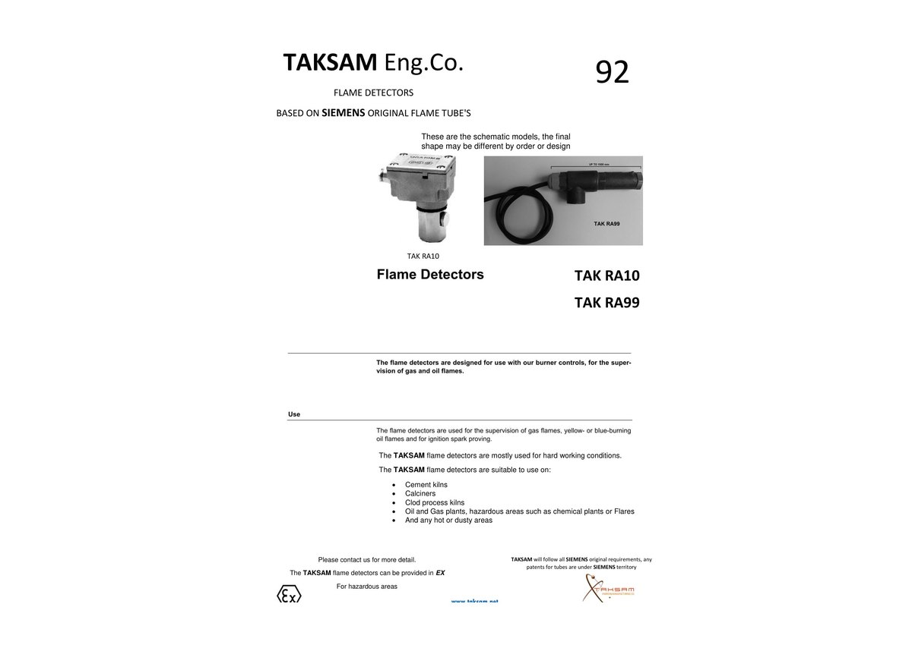

Flame detector modules
ماژولهای آشکارساز شعله
Industrial flame-detection modules for hot, dusty, and harsh combustion environments, including cement kilns, calciners, oil and gas plants, flares, and hazardous-area applications where applicable.
ماژولهای آشکارساز شعله برای محیطهای سخت، داغ و غبارآلود مانند کورههای سیمان، کلساینرها، صنایع نفت و گاز، فلرها و در صورت نیاز کاربردهای محیطهای خطرناک.